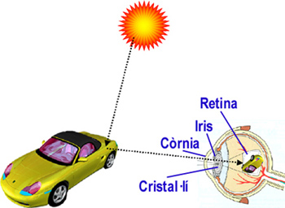
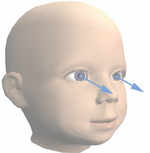
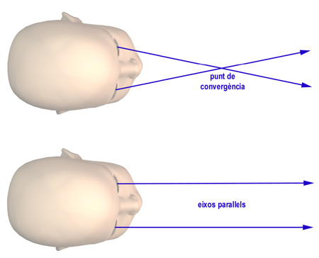

Visió estereoscòpica.
Fonaments de la percepció estereoscòpica.
Anatomia de l'ull humà
De tots els elements de l'anatomia de l'ull, només ens interessen aquests:
- La còrnia, que és la part transparent de la capa externa de
l'ull.
- L'iris, que és la part acolorida de l'ull i que té com a funció
regular la quantitat de llum que entra a l'interior. El forat central
de l'iris per on sí pot passar la llum s'anomena pupil·la.
- El cristal·lí, que té forma de lent convexa pels dos costats, i
que és capaç de variar la seva curvatura, permetent així enfocar a
diferents distàncies. La deformació del cristal·lí s'anomena acomodació.
- La retina, que és la capa posterior de l'ull, on es s'apleguen
gran quantitat de cèl·lules fotosensibles, especialment en
una regió anomenada fòvea.
- Els músculs oculars, responsables de la mobilitat de l'ull.

A més a més de les parts de l'ull que acabem d'anomenar, farem
servir aquests altres conceptes:
- Eix òptic. Intuïtivament, l'eix òptic (o direcció principal
de visió) és la direcció
cap a on mira l'ull. Per ser una mica més precisos, podem dir que
l'eix òptic neix al punt central de la retina (on hi ha major concentració
de cèl·lules), passa pel centre de la pupil·la i avança en la direcció
en que estem mirant. Per aquesta pròpia definició, tots els objectes de
l'entorn situats sobre l'eix òptic es projecten al centre de la retina.

